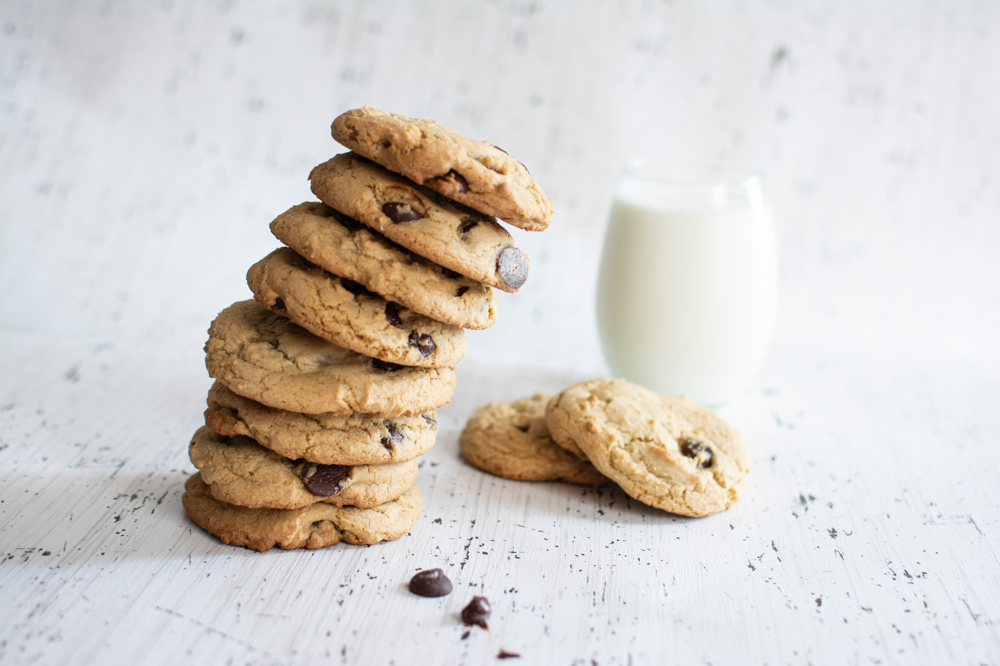

Recipe from chimes by design blog, accessed on 08 September 2021. Scroll down for the detail recipe. Photo By: Christina Branco
This recipe makes 5-6 dozen cookies, so prepare yourself for a long day of cookie making! This recipe is great for a bake sale or for a party offcourse.
Ingredients
- 1/2 c butter (1 stick)
- 2 c brown sugar
- 3 eggs
- 1 T vanilla
- 1 1/2 c chunky peanut butter
- 5 c quick cooking oats
- 6 oz plain M&Ms
- 6 oz white chocolate chips
Directions
- You will need a large bowl and an army of cookie sheets.
- Preheat the oven to 350°.
- Cream together butter and sugar.
- Add peanut butter and beat until somewhat fluffy.
- Combine eggs into mixture.
- Add oats in small portions until they are completely combined.
- To make regular sized cookies, drop by tablespoon onto a cookie sheet lined with parchment paper.
- Or if your dough allows, roll into balls and place on the baking sheet.
- Smash your balls or drops down with a fork or spoon (these don't flatten out as they bake, but get terrifically chewy!).
- Bake for 12-15 minutes. Depends on your oven and your desired done-ness. I like mine a little crispy, so I go for 15 minutes.
Notes
*You can mix anything in of your choice here ... possibilities are endless! I usually do M&Ms and dark chocolate chips, but I thought I'd mix it up.
FYI this is a hand-mixing job—this will kill your electric mixer since the dough is SUPER thick. (And you might work up a sweat mixing these!)